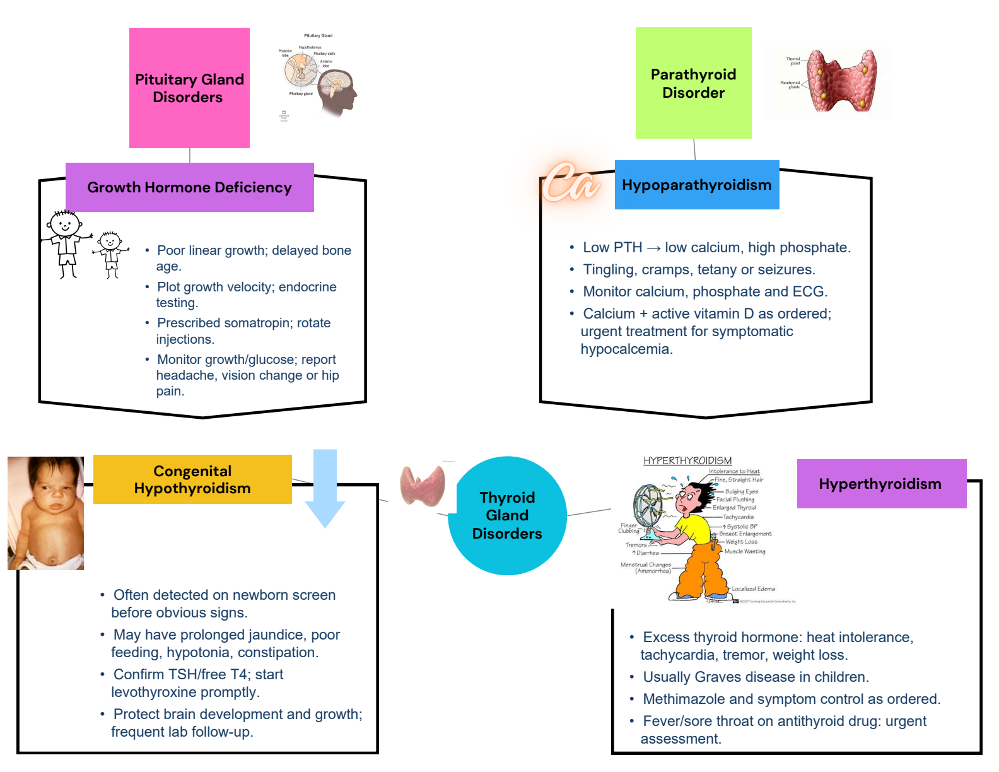
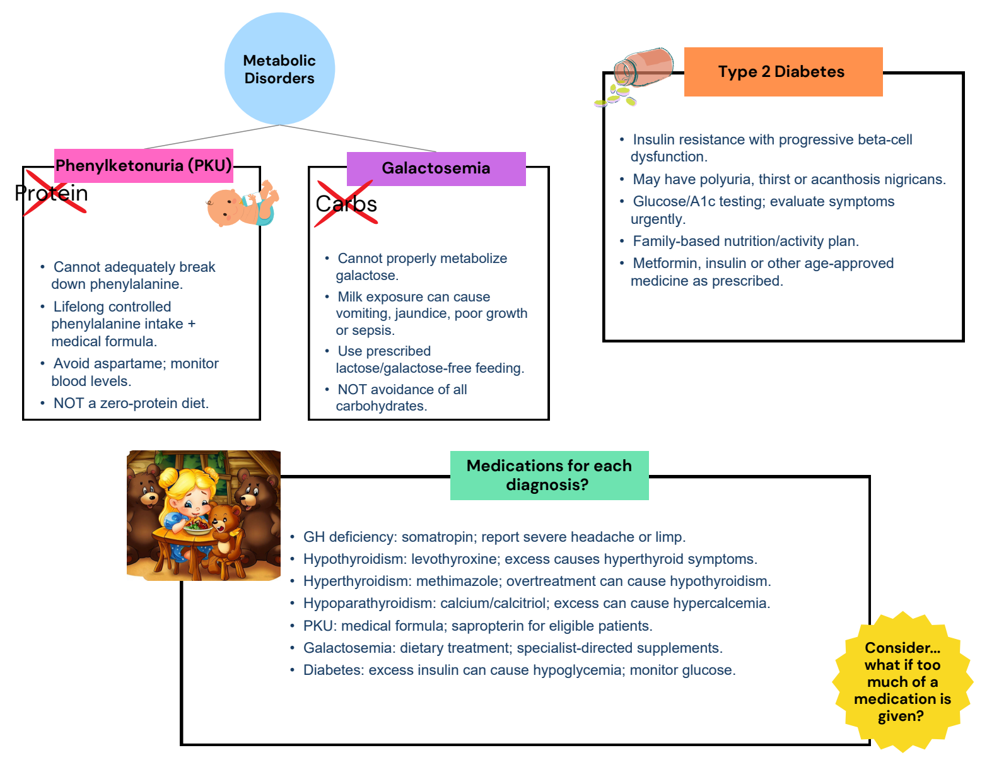
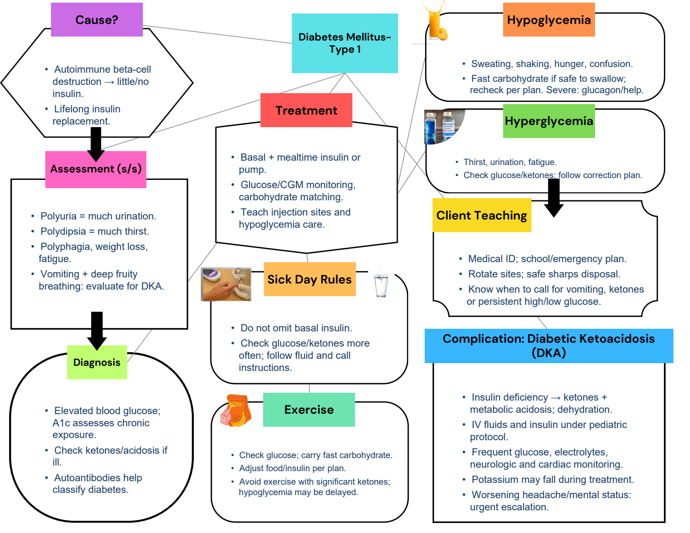

Completed maps with every original diagram. Switch to the original for blank practice.
1 / 3 Growth, thyroid and parathyroid
Completed map · original artwork + added blue notes Completed study notes · suggested additions
Growth hormone deficiency Poor linear growth; delayed bone age. Plot growth velocity; endocrine testing. Prescribed somatropin; rotate injections. Monitor growth/glucose; report headache, vision change or hip pain. Hypoparathyroidism Low PTH → low calcium, high phosphate. Tingling, cramps, tetany or seizures. Monitor calcium, phosphate and ECG. Calcium + active vitamin D as ordered; urgent treatment for symptomatic hypocalcemia. Congenital hypothyroidism Often detected on newborn screen before obvious signs. May have prolonged jaundice, poor feeding, hypotonia, constipation. Confirm TSH/free T4; start levothyroxine promptly. Protect brain development and growth; frequent lab follow-up. Hyperthyroidism Excess thyroid hormone: heat intolerance, tachycardia, tremor, weight loss. Usually Graves disease in children. Methimazole and symptom control as ordered. Fever/sore throat on antithyroid drug: urgent assessment. Original selectable text Exact extraction; text embedded inside pictures remains in the full-size original visual.
Pituitary Gland
Disorders
Growth Hormone Deficiency
Thyroid
Gland
Disorders
Congenital
Hypothyroidism
Hyperthyroidism
Parathyroid
Disorder
Hypoparathyroidism
2 / 3 Metabolic disorders and medicines
Completed map · original artwork + added blue notes Completed study notes · suggested additions
Phenylketonuria Cannot adequately break down phenylalanine. Lifelong controlled phenylalanine intake + medical formula. Avoid aspartame; monitor blood levels. NOT a zero-protein diet. Galactosemia Cannot properly metabolize galactose. Milk exposure can cause vomiting, jaundice, poor growth or sepsis. Use prescribed lactose/galactose-free feeding. NOT avoidance of all carbohydrates. Type 2 diabetes Insulin resistance with progressive beta-cell dysfunction. May have polyuria, thirst or acanthosis nigricans. Glucose/A1c testing; evaluate symptoms urgently. Family-based nutrition/activity plan. Metformin, insulin or other age-approved medicine as prescribed. Medications and too much / too little GH deficiency: somatropin; report severe headache or limp. Hypothyroidism: levothyroxine; excess causes hyperthyroid symptoms. Hyperthyroidism: methimazole; overtreatment can cause hypothyroidism. Hypoparathyroidism: calcium/calcitriol; excess can cause hypercalcemia. PKU: medical formula; sapropterin for eligible patients. Galactosemia: dietary treatment; specialist-directed supplements. Diabetes: excess insulin can cause hypoglycemia; monitor glucose. Read the original shorthand carefully The source crosses out “protein” and “carbs.” PKU requires controlled phenylalanine with adequate nutrition; galactosemia restricts galactose/lactose, not every carbohydrate. The added notes make those distinctions explicit.
Original selectable text Exact extraction; text embedded inside pictures remains in the full-size original visual.
Metabolic
Disorders
P r o t e i n
Phenylketonuria (PKU)
Galactosemia
Type 2 Diabetes
Medications for each
diagnosis?
Consider...
what if too
much of a
medication is
given?
C a r b s 3 / 3 Type 1 diabetes
Completed map · original artwork + added blue notes Completed study notes · suggested additions
Cause Autoimmune beta-cell destruction → little/no insulin. Lifelong insulin replacement. Assessment Polyuria = much urination. Polydipsia = much thirst. Polyphagia, weight loss, fatigue. Vomiting + deep fruity breathing: evaluate for DKA. Diagnosis Elevated blood glucose; A1c assesses chronic exposure. Check ketones/acidosis if ill. Autoantibodies help classify diabetes. Treatment Basal + mealtime insulin or pump. Glucose/CGM monitoring, carbohydrate matching. Teach injection sites and hypoglycemia care. Sick days Do not omit basal insulin. Check glucose/ketones more often; follow fluid and call instructions. Exercise Check glucose; carry fast carbohydrate. Adjust food/insulin per plan. Avoid exercise with significant ketones; hypoglycemia may be delayed. Hypoglycemia Sweating, shaking, hunger, confusion. Fast carbohydrate if safe to swallow; recheck per plan. Severe: glucagon/help. Hyperglycemia Thirst, urination, fatigue. Check glucose/ketones; follow correction plan. Client teaching Medical ID; school/emergency plan. Rotate sites; safe sharps disposal. Know when to call for vomiting, ketones or persistent high/low glucose. DKA Insulin deficiency → ketones + metabolic acidosis; dehydration. IV fluids and insulin under pediatric protocol. Frequent glucose, electrolytes, neurologic and cardiac monitoring. Potassium may fall during treatment. Worsening headache/mental status: urgent escalation. Original selectable text Exact extraction; text embedded inside pictures remains in the full-size original visual.
Diabetes Mellitus-
Type 1
Cause?
Diagnosis
Assessment (s/s)
Treatment
Hypoglycemia
Hyperglycemia
Client Teaching
Sick Day Rules
Complication: Diabetic Ketoacidosis
(DKA)
Exercise